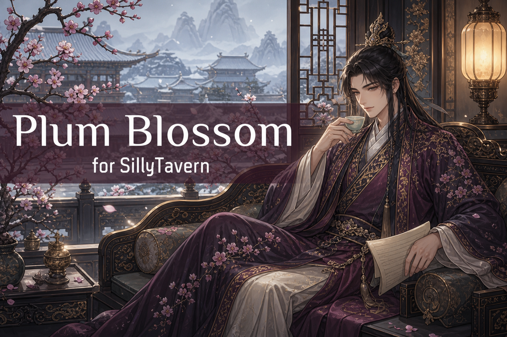

Using the White Lotus extension? No need to download manually. The extension can import Plum Blossom for you.
Most presets dump the same wall of instructions into every single turn, whether the scene needs them or not. Plum Blossom doesn't. It's built around a conditional main prompt that adjusts to what's actually happening. Instructions for confrontations show up when there's conflict; guidance for romantic or sexual tension shows up when the scene calls for it and stays out of the way during active combat.
The way it works: with Scene Analysis enabled, the model outputs a short <analyze> block at the end of each response. Plum Blossom reads that block with regex, sets a batch of variables, and uses {{if}} macros to decide which prompt snippets belong in the next generation. That's the engine. You can run the preset without it, but the dynamic prompt is the whole point, so at that stage you'd be better off with something simpler.
Fair warning on size: she's thicc. White Lotus averages around 2k tokens; this one sits closer to 4k. That's more than twice Marinara's size, though still short of the really enormous presets out there. It's made for capable models (thinking models especially), and it will not do well on older or less intelligent ones. It's SillyTavern-only since it depends on the macro engine, though it does run fine on TauriTavern, and it's integrated with the White Lotus extension if you want a more streamlined way to manage everything.
Every user-facing toggle lives at the top of the preset in the Choose section: length, POV, and the allowances you want to switch on or off. This is the only part you actually need to touch. Set your preferences, import, and go. The Controls section above it is just for resetting things, so you can usually ignore it.
Enable Scene Analysis and the preset asks the model to output an <analyze> block each turn. Regex reads that block and sets variables that determine which conditional snippets get included next time. The result is a prompt that reflects the current situation instead of firing every instruction at once. Nearly everything else in Plum Blossom depends on this being on.
Scene Analysis picks a Focus Character each turn (rotatable), plus up to two Prominent Characters, filling the roles of lead and supporting cast. The Focus Character gets the deepest attention: special states like injured or impaired, and their relationship to {{user}}, both of which feed back into the prompt. An impaired character gets dialogue and riskier-behavior instructions; low familiarity adds a note that people stay reserved with those they don't know well. There are toggles for M/M, M/F, and F/F pairings that adjust wording without much changing the underlying instructions. You can also set Narrator is Focus Character to auto-assign your lead as the narrator, which sidesteps the usual close-third-person problem on multi-character and scenario cards.
Toggle Auto-Author at the start of a chat and Plum Blossom runs an Establishment routine to give that chat its own writing style. It works out the time period (fantasy settings included), the tone, whether the setting is mundane or fantastical, and whether it reads as literary or webnovel, then picks an author from the matching pool. NSFW scenes reroute to authors who actually write those, then switch back. It's swipe-aware and self-repairing (an Establishment Stalled tag just means it rejected something odd and will retry). Optional, but it needs Scene Analysis to function.
Toggle Allow NSFW to unlock explicit handling (leave it off and a mild, prim prompt is used instead). Scene Analysis then detects when things are heading that direction and injects the right prompts based on your NSFW Pacing and Type choices. Explicit Narration pushes graphic language, while Less Explicit Dialogue keeps the spoken lines tamer, and yes, you can run both together.
Allow Violence works the same way with three flavors to pick from. Model-specific tweaks smooth over the quirks of the main models this was built for (including a workaround for the NSFW filter that's been tripping on Mimo via NanoGPT lately). Leave any of these off if their concerns don't apply to you.
Every variable is prefixed with pb_ so it's easy to spot in the Variable Viewer. Reset All State wipes them clean and restarts Establishment; Re-Run Auto-Author just re-runs the setting analysis without clearing everything else. Toggle whichever you need on, generate one message, then toggle it off. A Debug Readout toggle surfaces the current values at the top of your next message so you can inspect them in SillyTavern's prompt viewer. To clear leftover <analyze> blocks from a chat, there's a small ChatBlockCleaner extension (already built into the White Lotus extension if you use that).
- 01 Turn on the Experimental Macro Engine in SillyTavern first. Plum Blossom won't work without it.
- 02 Import the preset, then set your preferences in the CHOOSE section at the top: length, POV, and the NSFW / violence allowances you want. That's the only section you need to configure.
-
03
Leave Scene Analysis on. It's the engine, prompting the model for an
<analyze>block each turn that drives the conditional prompt. Without it, most of Plum Blossom sits idle. - 04 Optionally toggle Auto-Author at the start of a new chat for a chat-unique writing style, and Handle Relationships for relationship analysis on your Focus Character. Both need Scene Analysis enabled.
- 05 Flip on Allow NSFW or Allow Violence if you want them, then fine-tune with the pacing, type, and style sub-options. Pick a model tweak that matches whatever model you're running (or skip it).
-
06
If something gets stuck (an Establishment Stalled tag, stale data, leftover blocks), use the Controls section: Reset All State or Re-Run Auto-Author. And if SillyTavern's regex ever wipes a chat, your backup is in the
username/backupsfolder.